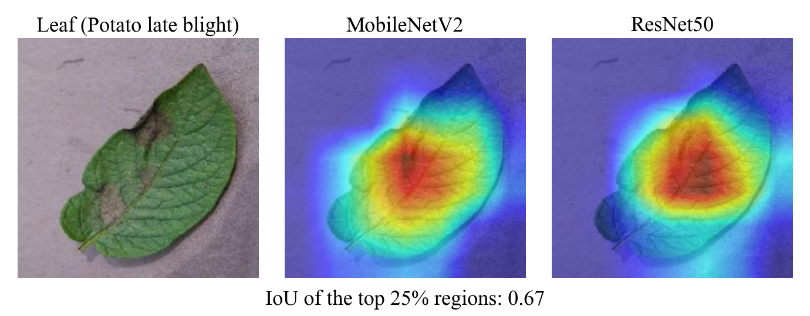
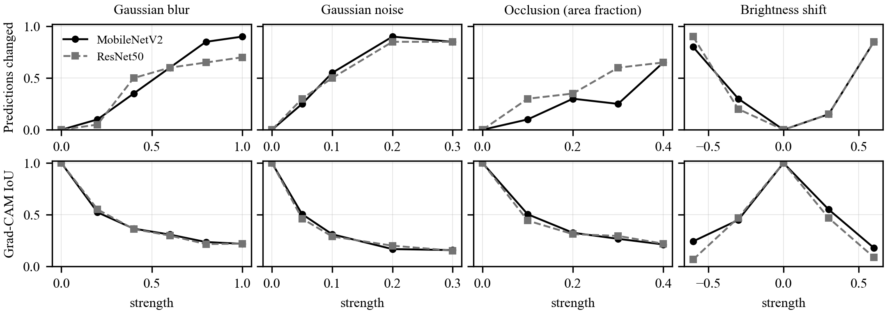
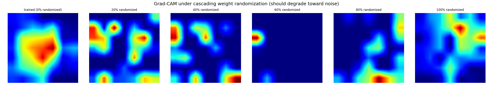
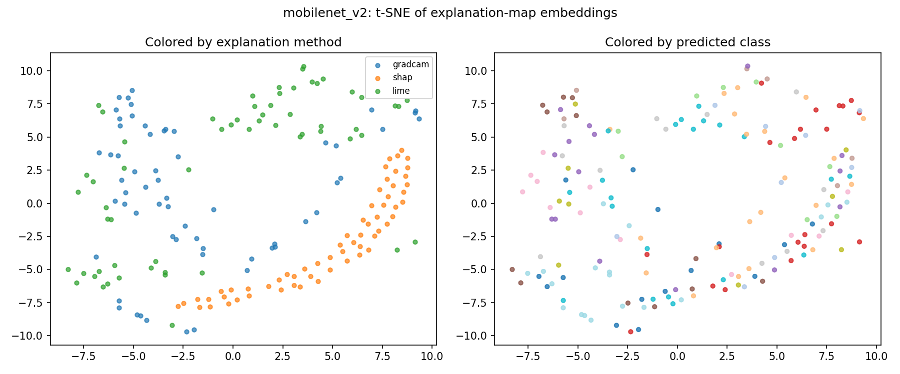

Convolutional neural networks trained on curated image repositories [1] classify crop leaf diseases with high accuracy on held-out images from the same repository [2]. A label alone gives a grower or an agronomist little reason to trust a prediction. Explanation methods add a reason by marking where in the image the evidence lies.
Three widely used methods do this in three different forms. Grad-CAM [3] returns a coarse heat map taken from the last convolutional layer. SHAP [5] returns a value for each pixel. LIME [4] returns a weight for each superpixel, a group of similar neighbouring pixels. Because the forms differ, it is not obvious how far the three agree on the same prediction, and a reader who sees three pictures has to judge by eye. If the map of one method could be matched reliably to the maps of the others, a cheap method could stand in for an expensive one, and disagreement could be flagged automatically.
This paper measures that agreement and tests one way of learning it. The contributions are:
Fig. 1 shows the pipeline. The encoder did not beat plain correlation; we report that result in full.
Plant disease images. Hughes and Salathé [1] released an open-access repository of over 50,000 curated images of healthy and infected crop leaves. Mohanty et al. [2] trained a convolutional network on 54,306 images covering 14 crop species and 26 diseases and reported 99.35% accuracy on a held-out test set, but 31.4% on images from online sources. The gap shows that accuracy on the curated images does not carry to other photographs.
Explanation methods. Grad-CAM [3] uses the gradients flowing into the last convolutional layer to make a coarse heat map of the regions that drove a prediction. LIME [4] explains one prediction of any classifier by fitting a simple interpretable model to the classifier's behaviour around that prediction. SHAP [5] scores how much each input feature contributed to a prediction, using additive importance measures with a unique solution that has desirable properties.
Checking explanations. Adebayo et al. [6] propose tests for saliency methods and report that some are independent of both the trained model and the data. One of their tests re-initializes the weights of a network from the top layer to the bottom and checks that the explanation changes; we use a version of it in Section IV-E.
Learned similarity. A Siamese network [7] has two identical sub-networks joined at their outputs, so that two inputs are compared in a shared space. Supervised contrastive learning [8] uses class labels so that embeddings of the same class are pulled together and those of different classes are pushed apart. We use both ideas to compare explanation maps.
We do not propose a new explanation method. We measure how three existing ones relate on the same predictions and test whether a learned embedding helps.
We use the Kaggle copy of PlantVillage [9]. It has 20,638 images in 15 classes: 2 of bell pepper, 3 of potato and 10 of tomato (Table I). The 54,306-image set used in [2] covers 14 crop species and 26 diseases; this copy covers only three crops. The images show single leaves on plain backgrounds (Fig. 2). Class sizes range from 152 to 3,208 images, a ratio of 21.
The images were split by class into 70% training, 15% validation and 15% test with a fixed seed (42): 14,447, 3,097 and 3,094 images. We did not check for near-duplicate images across the splits. If there are any, test accuracy is higher than it would be on new photographs. All images were resized to 224 × 224 and normalized with the ImageNet mean and standard deviation. Training images were also flipped horizontally at random, rotated by up to 15 degrees, and given brightness and contrast jitter of 0.2.
| Class | Images | Test n | MobileNetV2 | ResNet50 |
|---|---|---|---|---|
| Bell pepper, bacterial spot | 997 | 149 | 1.00 | 0.98 |
| Bell pepper, healthy | 1,478 | 221 | 0.99 | 0.96 |
| Potato, early blight | 1,000 | 150 | 0.99 | 0.97 |
| Potato, late blight | 1,000 | 150 | 0.93 | 0.98 |
| Potato, healthy | 152 | 23 | 1.00 | 0.91 |
| Tomato, bacterial spot | 2,127 | 319 | 0.91 | 0.87 |
| Tomato, early blight | 1,000 | 150 | 0.74 | 0.62 |
| Tomato, late blight | 1,909 | 287 | 0.86 | 0.90 |
| Tomato, leaf mold | 952 | 143 | 0.81 | 0.89 |
| Tomato, Septoria leaf spot | 1,771 | 265 | 0.91 | 0.74 |
| Tomato, two-spotted spider mite | 1,676 | 252 | 0.94 | 0.93 |
| Tomato, target spot | 1,404 | 210 | 0.84 | 0.82 |
| Tomato, yellow leaf curl virus | 3,208 | 481 | 0.95 | 0.97 |
| Tomato, mosaic virus | 373 | 56 | 0.93 | 0.96 |
| Tomato, healthy | 1,591 | 238 | 0.98 | 0.82 |
| All 15 classes | 20,638 | 3,094 | 0.92 | 0.89 |
We use MobileNetV2 [10] and ResNet50 [11] with ImageNet [12] weights. The backbone weights are frozen and the final layer is replaced by a new linear layer with 15 outputs (1280 inputs for MobileNetV2, preceded by dropout 0.2; 2048 for ResNet50). Only that layer is trained: 19,215 of 2,243,087 parameters for MobileNetV2 and 30,735 of 23,538,767 for ResNet50. Batch-normalization statistics in the frozen backbone still update, because the model runs in training mode. The loss is cross-entropy with class weights wc = N / (K nc), where N is the number of training images, K = 15 and nc the images in class c. We use Adam [13] with learning rate 10−3, weight decay 10−4, batch size 32 and 3 epochs, and keep the epoch with the best validation accuracy.
All three methods explain the class the network predicted. Grad-CAM uses the pytorch-grad-cam library [14] on the last block (features[-1] in MobileNetV2, layer4[-1] in ResNet50), whose output is a 7 × 7 grid. Because the backbone is frozen, no weight needs a gradient, so the input tensor is marked as requiring one; without this the gradient hook receives nothing. SHAP uses GradientExplainer (shap 0.49.1) with 30 background images drawn at random from the image folder and 50 samples; the values are summed over the colour channels. LIME segments the image with quickshift (kernel size 4, maximum distance 200, ratio 0.2), classifies 150 perturbed copies in which hidden superpixels are set to black, fits a linear model, and gives each pixel the weight of its superpixel.
Grad-CAM is non-negative after its ReLU. For SHAP and LIME we keep only positive values, so all three maps show evidence for the predicted class and evidence against it is dropped. Each map is scaled to [0, 1] by its own minimum and maximum and resized to 64 × 64. A map with no positive value becomes all zeros.
The overlap of two heat maps is the intersection over union of their top 25% regions,
where T is the set of pixels whose value is at or above the 75th percentile of the map. We compare the Grad-CAM maps of the two networks on 75 test images (5 per class, seed 42).
For stability we take 20 random test images (seed 42, the same for both networks) and apply four changes at several strengths s: Gaussian blur (kernel size about 15s, odd and at least 3, σ = 5s); additive Gaussian noise with standard deviation s on pixel values in [0, 1]; a grey square covering the fraction s of the image at a random position; and a brightness shift of s added to pixel values in [0, 1]. Noise and the occlusion position are drawn once per image and strength. For each change we record the share of images whose predicted class differs from that of the unchanged image, and the mean IoU between the Grad-CAM map of the unchanged and of the changed image, each for the class predicted on that image.
Following the idea of Adebayo et al. [6], we re-initialize the layers that have parameters, starting at the output and moving to the input, in five steps of 20% of those layers each, and compute Grad-CAM after each step. We report the Spearman rank correlation between the maps of consecutive steps. We ran this for one image and for MobileNetV2 only. The re-initialization was not seeded, so a repeat run gives different values.
Plain correlation. Two 64 × 64 maps a and b, flattened, are compared with the Pearson correlation
Siamese encoder. One small network turns a 64 × 64 map into a vector of length 64 with unit norm. It has three blocks of 3 × 3 convolution, batch normalization and ReLU (1→16, 16→32 and 32→64 channels), with max pooling after the first two and global average pooling after the third, followed by two linear layers (64→64 with ReLU, then 64→64). It has 31,840 parameters. The same weights process the maps of all three methods, and the network is not told which method made a map. It is trained with the supervised contrastive loss [8]. With unit-norm embeddings z, temperature τ = 0.1, a batch with anchors i, positives P(i) and all other maps A(i),
and the loss is the mean of ℓi over anchors with at least one positive. We tried two labels. With the class label, maps of images with the same predicted class are positives, whichever method made them. With the image label, only the three maps of one image are positives, which is the usual Siamese pairing. Training used Adam (10−3), batch size 64 and seed 0.
Evaluation. We took 60 random test images (seed 42) and cached their three maps from MobileNetV2 (56 of the 60 were classified correctly; 13 classes were predicted). The images were split into 5 folds by image, so the three maps of an image are never divided between training and test. For each fold an encoder was trained on 48 images and tested on the 12 held-out ones. For every ordered pair of methods (query → target) and every held-out image, we ranked the target maps of the 12 images by similarity to the query map and recorded whether the nearest one belongs to the same image (top-1), whether the same image is among the three nearest (top-3), and whether the nearest map has the same predicted class. Chance is computed from the same data: 1/12 for top-1, 3/12 for top-3, and the share of held-out images with the query's class for same-class. We report the mean over the six ordered pairs, then the mean and standard deviation over the 5 folds. Two baselines use the same procedure: an untrained encoder with random weights, and plain correlation, Eq. (2). Plain correlation needs no training, so we also measured it on all 60 images at once (chance 1/60). The six encoder settings (two labels, 30, 100 and 300 epochs) were all run and all are reported.
Everything ran on one laptop (Apple M2, 8 GB memory). Classifier training and the Grad-CAM runs used the Apple GPU through PyTorch 2.12.0 and torchvision 0.27.0; SHAP, LIME and the encoder runs used the CPU. Caching the maps of 60 images took about 18 minutes. A Python package and a FastAPI web application serve the same pipeline for one uploaded image in about 17 seconds on the CPU. The source code and the numbers behind every table are at github.com/Shashh-wat/xaiproject.
MobileNetV2 reached 0.918 test accuracy and ResNet50 0.889 (Table II). The 95% intervals, ±1.0 and ±1.1 points, do not overlap. ResNet50 was still improving when training stopped: its validation accuracy was 0.808, 0.869 and 0.893 over the three epochs, while MobileNetV2 peaked at 0.917 in epoch 2. The comparison therefore says little about the architectures themselves; it compares two short runs of a trained last layer.
| Model | Trainable / all parameters | Best val. acc. | Test acc. (95% CI) | Macro precision | Macro recall | Macro F1 |
|---|---|---|---|---|---|---|
| MobileNetV2 | 19,215 / 2,243,087 | 0.917 | 0.918 ± 0.010 | 0.893 | 0.919 | 0.902 |
| ResNet50 | 30,735 / 23,538,767 | 0.893 | 0.889 ± 0.011 | 0.887 | 0.889 | 0.883 |
Recall is high for most classes and lowest for tomato early blight (0.74 for MobileNetV2, 0.62 for ResNet50; Table I). MobileNetV2 has precision of only 0.61 for healthy potato, the smallest class (23 test images), although its recall there is 1.00. Class size and recall are not clearly related: the Spearman correlation between test-set class size and recall over the 15 classes is −0.19 for MobileNetV2 (p = 0.50) and −0.20 for ResNet50 (p = 0.47). With 15 classes this cannot rule out a weak relation.
Over the 75 test images the mean IoU between the Grad-CAM maps of the two networks is 0.435 (median 0.452, standard deviation 0.193, range 0.015 to 0.81). Fig. 2 shows one leaf where both networks look at the lesion and the overlap is 0.67. On the 67 images that both networks classify correctly the mean is 0.456; on the 8 images where at least one is wrong it is 0.259. Eight images are too few to treat the second figure as a result. By class, the lowest mean is for tomato bacterial spot (0.152) and the highest for potato late blight (0.588), with 5 images per class. The two networks agree on part of the evidence, not on all of it.

Table III and Fig. 3 give all values. Blur and noise raise the share of changed predictions steadily with strength. At the mildest non-zero strength of each change, 5% to 30% of predictions change, yet the mean IoU of the Grad-CAM map with the original is already between 0.44 and 0.55; at the strongest strengths it is between 0.07 and 0.24. So a mild change moves the heat map in most images even when the predicted class stays the same. The two networks behave alike with two exceptions. ResNet50 changes its prediction more often under occlusion (0.30, 0.35 and 0.60 at 0.1, 0.2 and 0.3 of the area, against 0.10, 0.30 and 0.25), and at the darkest setting its Grad-CAM map has almost no overlap with the original (IoU 0.07, against 0.24 for MobileNetV2), with 0.90 of its predictions changed. With 20 images, each share moves in steps of 0.05 and differences below about 0.2 should not be read as real. IoU of top-25% regions of a coarse map is sensitive to small shifts, and we have no reference for how much shift a user would accept.

| Change | Strength | Pred. changed, MobileNetV2 | Pred. changed, ResNet50 | IoU, MobileNetV2 | IoU, ResNet50 |
|---|---|---|---|---|---|
| Blur | 0.2 | 0.10 | 0.05 | 0.52 | 0.55 |
| Blur | 0.4 | 0.35 | 0.50 | 0.37 | 0.36 |
| Blur | 0.6 | 0.60 | 0.60 | 0.31 | 0.30 |
| Blur | 0.8 | 0.85 | 0.65 | 0.24 | 0.22 |
| Blur | 1 | 0.90 | 0.70 | 0.22 | 0.22 |
| Noise | 0.05 | 0.25 | 0.30 | 0.51 | 0.46 |
| Noise | 0.1 | 0.55 | 0.50 | 0.31 | 0.29 |
| Noise | 0.2 | 0.90 | 0.85 | 0.17 | 0.20 |
| Noise | 0.3 | 0.85 | 0.85 | 0.16 | 0.15 |
| Change | Strength | Pred. changed, MobileNetV2 | Pred. changed, ResNet50 | IoU, MobileNetV2 | IoU, ResNet50 |
|---|---|---|---|---|---|
| Occlusion | 0.1 | 0.10 | 0.30 | 0.50 | 0.44 |
| Occlusion | 0.2 | 0.30 | 0.35 | 0.33 | 0.31 |
| Occlusion | 0.3 | 0.25 | 0.60 | 0.27 | 0.29 |
| Occlusion | 0.4 | 0.65 | 0.65 | 0.21 | 0.22 |
| Brightness | -0.6 | 0.80 | 0.90 | 0.24 | 0.07 |
| Brightness | -0.3 | 0.30 | 0.20 | 0.45 | 0.47 |
| Brightness | 0.3 | 0.15 | 0.15 | 0.55 | 0.47 |
| Brightness | 0.6 | 0.85 | 0.85 | 0.18 | 0.09 |
Fig. 4 shows the maps for one image. The rank correlation between the maps of consecutive steps is 0.014, 0.366, 0.340, −0.293 and 0.040. The map already differs from the trained one after the output-side 20% of the layers are re-initialized, which is what the test expects if the map depends on the learned weights. The values are not monotone and come from one image and one network, so the check does not show more than that.

Table IV gives plain correlation of the 64 × 64 maps over the 60 images. The maps of one image are correlated more than maps of different images for every pair, by very different amounts. Grad-CAM and LIME are clearly linked: 0.231 for the same image against 0.091 for different images, and the nearest LIME map to a Grad-CAM map belongs to the same image 8.3% of the time against 1.7% by chance. Grad-CAM and SHAP are linked weakly (0.139 against 0.108). SHAP and LIME hardly at all (0.039 against 0.031). Even for the best pair, the right image is first in 8 of 100 cases. The nearest map has the same predicted class in 11.4% of cases on average, against 8.7% by chance, so the maps identify the image more than the disease.
| Query → target | Pearson, same image | Pearson, other images | Top-1 same image | Top-3 same image | Top-1 same class |
|---|---|---|---|---|---|
| Grad-CAM → SHAP | 0.139 | 0.108 | 0.050 | 0.117 | 0.117 |
| SHAP → Grad-CAM | 0.139 | 0.108 | 0.033 | 0.133 | 0.067 |
| Grad-CAM → LIME | 0.231 | 0.091 | 0.083 | 0.117 | 0.150 |
| LIME → Grad-CAM | 0.231 | 0.091 | 0.083 | 0.183 | 0.117 |
| SHAP → LIME | 0.039 | 0.031 | 0.050 | 0.100 | 0.117 |
| LIME → SHAP | 0.039 | 0.031 | 0.050 | 0.100 | 0.117 |
| Chance | 0.017 | 0.050 | 0.087 |
Table V gives the cross-validated results. None of the six encoder settings is clearly better than the untrained encoder. Top-1 same-image matching is 0.075 to 0.117 for the trained encoders against 0.092 ± 0.030 untrained, and the differences are smaller than the fold-to-fold spread. All six are below plain correlation (0.192 ± 0.032), and the best encoder result in top-3 (0.286) is below correlation (0.406). On the training images themselves the encoder reaches a top-1 same-image rate of only 0.05, so it is under-fitted and not over-fitted: the training loss falls from 4.72 to 4.02 in 100 epochs and the held-out loss moves from 3.56 to 3.64.
| Embedding | Top-1 same image | Top-3 same image | Top-1 same class |
|---|---|---|---|
| Class label, 30 epochs | 0.092 ± 0.043 | 0.242 ± 0.039 | 0.144 ± 0.061 |
| Class label, 100 epochs | 0.117 ± 0.030 | 0.247 ± 0.043 | 0.181 ± 0.069 |
| Class label, 300 epochs | 0.075 ± 0.014 | 0.286 ± 0.035 | 0.128 ± 0.018 |
| Image label, 30 epochs | 0.094 ± 0.024 | 0.281 ± 0.046 | 0.144 ± 0.062 |
| Image label, 100 epochs | 0.100 ± 0.027 | 0.264 ± 0.035 | 0.175 ± 0.036 |
| Image label, 300 epochs | 0.097 ± 0.025 | 0.261 ± 0.044 | 0.172 ± 0.042 |
| Untrained encoder | 0.092 ± 0.030 | 0.264 ± 0.033 | 0.139 ± 0.040 |
| Plain correlation | 0.192 ± 0.032 | 0.406 ± 0.032 | 0.247 ± 0.031 |
| Chance | 0.083 | 0.250 | 0.147 |
Fig. 5 shows why. The embeddings of the maps group by method, not by class and not by image. The network learned to tell Grad-CAM, SHAP and LIME maps apart, which is the opposite of the intended use. On one demonstration image the cosine similarities of the encoder's embeddings were between 0.83 and 0.94 for all three pairs, while the correlations of the same maps were between 0.13 and 0.45.

What the results support. Both networks give usable baselines. Their Grad-CAM maps overlap only partly (0.435) and move under mild image changes (about 0.5), so a single map should not be read as a fixed reason for a prediction. Among the three explanation methods, Grad-CAM and LIME point at similar places on the same image, Grad-CAM and SHAP slightly, SHAP and LIME almost not at all. A likely reason, which we did not test, is scale: Grad-CAM comes from a 7 × 7 grid and LIME from superpixels, so both are coarse, while the SHAP maps vary from pixel to pixel.
What they do not support. They do not show that a learned encoder links the methods. At this data size it did not beat plain correlation, and it learned to separate the methods instead. Likely causes, none of them tested, are the small training set (48 images per fold), the noise in the SHAP maps (50 samples and 30 background images), and the fact that telling methods apart is easier than finding what they share. A fair test needs a few hundred images, a less noisy SHAP, and the same procedure for ResNet50.
Threats to validity. The samples are small: 60 images for linking, 20 for stability, 75 for overlap and one for the sanity check, with one split and one seed for each classifier. SHAP is random: on one image the Grad-CAM–SHAP correlation was 0.17 in one run and 0.19 in another. The classifiers are three-epoch baselines with a frozen backbone. The photographs are on plain backgrounds, and [2] reports a large fall in accuracy on other images; we did not test field photographs. Keeping only positive evidence at 64 × 64 discards evidence against the class and fine detail. An earlier run used SHAP maps that were wrong: with the installed shap version the values come in a different array layout, and our first code read them as horizontal stripes. We found this because the encoder was at chance and the maps looked wrong. The code now handles both layouts and checks the shape. All results in this paper use the corrected maps.
We trained two CNN baselines on a 15-class PlantVillage copy (test accuracy 0.918 and 0.889), explained them with Grad-CAM, SHAP and LIME, and measured how the explanations relate. The Grad-CAM maps of the two networks overlap by 0.435 and change visibly under mild image changes. Grad-CAM and LIME maps of the same prediction are correlated (0.23 against 0.09 for different images), Grad-CAM and SHAP weakly, SHAP and LIME barely. A Siamese encoder with a supervised contrastive loss did not improve on plain correlation on unseen images. Next steps are more images, a less noisy SHAP, ResNet50 maps, and photographs taken outside the plain-background setting.